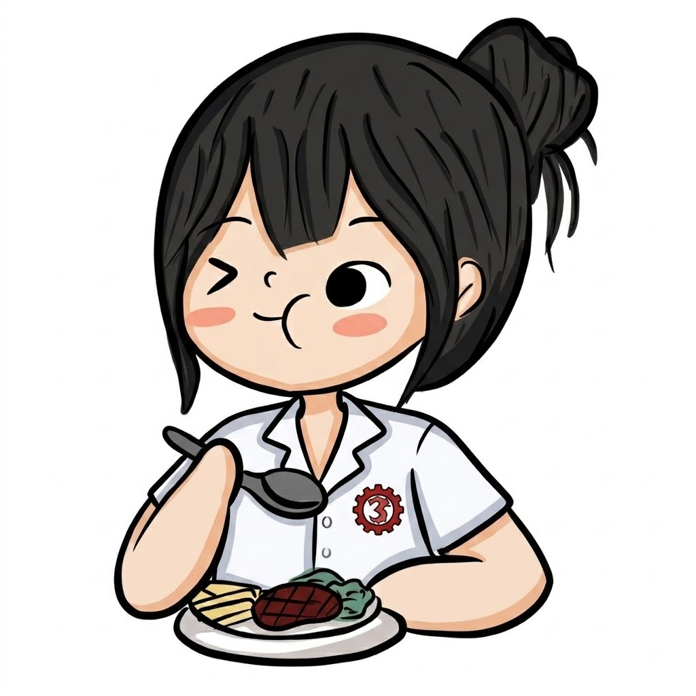

About This Guide
About Me
I am a student who enjoys finding affordable and delicious meals near TUP. I created this guide to help fellow students discover budget-friendly places where they can enjoy satisfying meals.
Why I Chose This Topic
I chose this topic because many students look for affordable meals while studying. Karinderyas and small eateries near TUP can provide tasty food without spending too much money. This guide makes it easier for students to know some food options they can consider.
Why Trust These Recommendations
These recommendations are based on the food choices, affordability, and convenience that students may look for when choosing a place to eat. The guide focuses on places that can be practical options for students who want affordable and filling meals.
